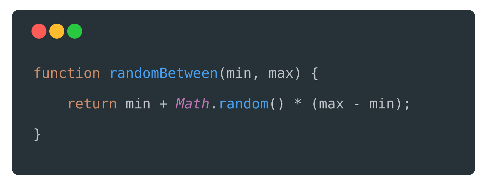
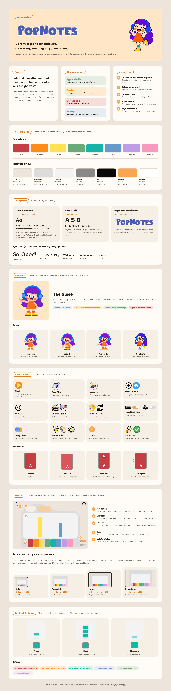

Core Interactive Features
Eight Colourful Keys
The heart of PopNotes is a row of eight colourful keys, shared by both modes.
- The keys A S D F G H J K on a computer keyboard play one octave, from C4 to C5.
- Each piano key has its own distinct colour, which corresponds to the visual representation of notes in Free Play Mode, as well as the colour of the guiding orbs in Learning Mode.
- Keys can also be pressed with a mouse or a finger on a touchscreen.
- Two switches can show keyboard letters (on by default) or solfege names (Do, Re, Mi…) on each key.
Toddlers lack reading skills, so colour does the work that labels usually do. The two optional label switches offer opportunities for further learning and more advanced interaction beyond the basic functions.
Eight natural notes are sufficient to cover basic, simple children’s songs, and they are arranged in a single row, ensuring that users do not face the obstacle of having to search across the whole keyboard.
Friendly Onboarding Guides
Proactive guidance introduces toddlers to unfamiliar operations before they begin independent play. Unlike experienced adult users, young children may not recognise when help is available or know that they need to request it, so the system initiates support at the beginning of the experience.
Cartoon characters frame the guidance as a friendly invitation to play rather than a formal set of instructions. Their gestures communicate actions visually, supporting the project’s low-text interaction approach. Each step focuses on one operation to limit the amount of information presented at once, while the “skip” button lets the child leave the guide and explore independently.
Free Play Mode: Light Bars
Children can press any of the eight coloured keys to make a sound. Each key is connected to a light bar in a fixed position above it. The bar rises and brightens while the key is held, then returns to rest when released. Variations in height and segmented patterns make repeated interactions feel fresh while keeping the connection between each action and its response clear.
Learning Mode
Coloured circles on the display show which keys to play through their position and colour. A small white circle on the next key provides an additional cue. The circles only move forward when the correct key is pressed, so children can follow the sequence at their own pace rather than keep up with a preset tempo.
Extended Technique: Random
PopNotes uses JavaScript’s Math.random() to add small, playful surprises to each press. Random changes how things look, never which note plays.
Where Random Is Used: The Light Bars
Every time a key is pressed in Free Play, its light bar is rebuilt with a new random shape.
How it works
A small helper function picks a random number between a minimum and a maximum:

On each press, this helper sets five values for that key’s bar:
| What changes | Random range | What the child sees |
|---|---|---|
| Bar height | 48%–91% | Some presses reach higher than others. |
| Number of blocks | 6–12 | The bar is split into a different pattern. |
| Block width and size | 78%–100% width | Each block looks a little uneven, like stacked toy bricks. |
| Rise speed | 260–520 ms | Some bars pop up quickly; others float up. |
| Glow speed | 1.1–1.8 s | The bar’s gentle pulse while held is never quite the same. |
These values are passed to CSS as custom properties, such as --bar-height, and CSS handles the animation. Because the bar is rebuilt on every new press, even quick taps get a fresh response.
Why it is designed this way
If every press looked exactly the same, a toddler might lose interest after a few tries. Small random changes make pressing the same key bring something slightly new to discover, inviting the child to keep exploring.
The ranges are deliberately limited. Bars never get too short to notice or so tall that they look broken, and they never move so fast that they startle. As the code comment puts it, these limits keep the display from becoming “busy or startling”.
Design decision
Random never decides the sound. Each key always plays the same note in both modes. For a toddler, the most important connection is “my action causes this result”. If the same key played different notes each time, that link would break and the instrument could feel confusing. Random therefore adds variety on top of a stable foundation: the sound stays predictable, and the visuals stay surprising.
Smaller Uses of Random
Shuffle Colours mixes up the key colours in a random order. If the shuffle lands on the same order, the colours shift by one, so the child always sees a change. Pitches stay where they are.
Celebration cards in Learning Mode randomly pick a message, such as “So Good!”, “Well Done!” or “Good Job!”, so finishing a song feels a little different each time.
Responsive and Adaptive Design System
The PopNotes design system brings together the project’s purpose, visual language and responsive behaviour. The guide covers colour, typography, the Guide character, buttons and icons, layout across screen sizes, and feedback and motion.
The full brand guide appears below. Select the image or open the PDF in a separate tab to zoom into its details.
Open the full design system PDF
